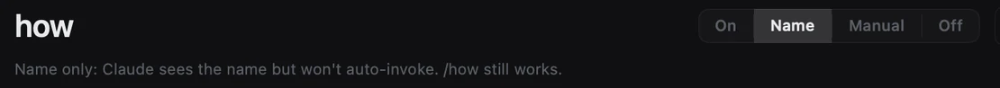

Skills are hard to find and harder to switch off.
They sit in folders you have to remember, and every new model wants a different setup. Loadout puts them all in one window with a switch on each, and keeps CLAUDE.md and AGENTS.md a click away. That's all it does.
Free, MITSigned and notarizedmacOS 14+





Every skill on your Mac, in one list.